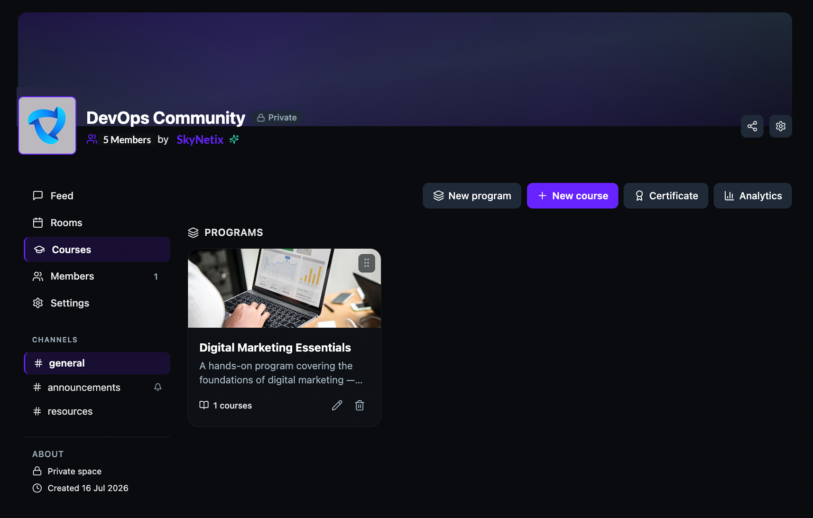
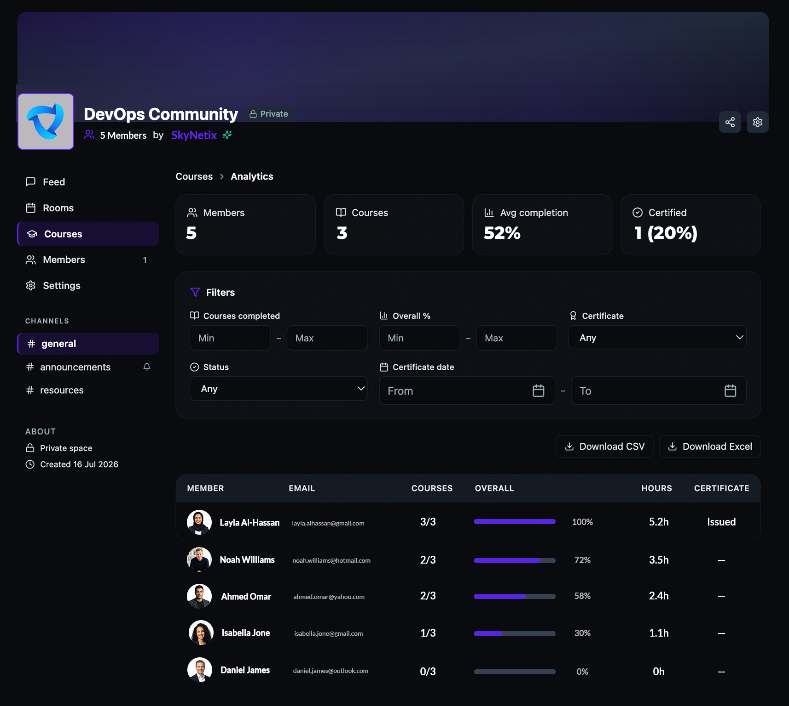
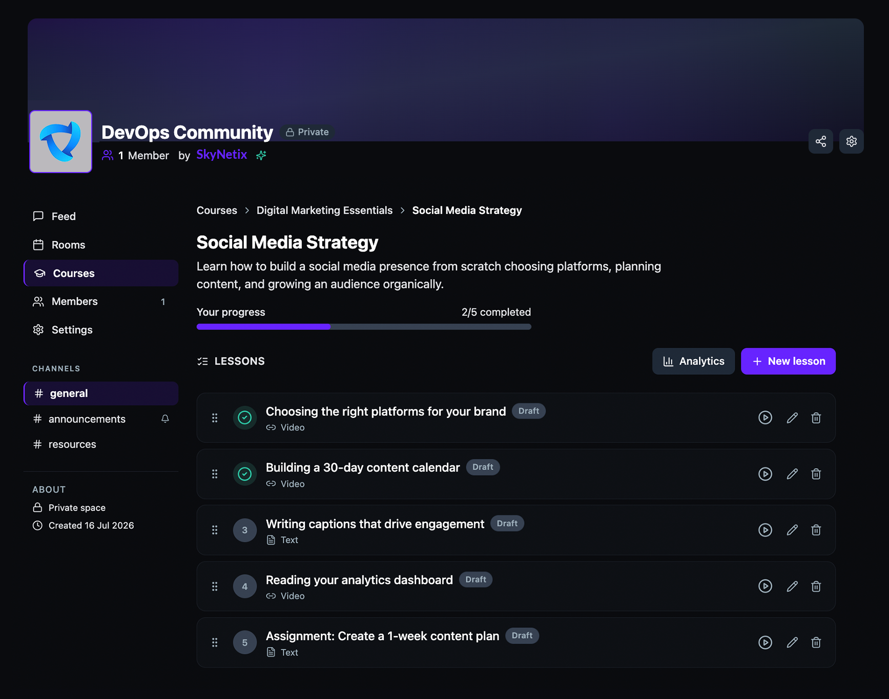
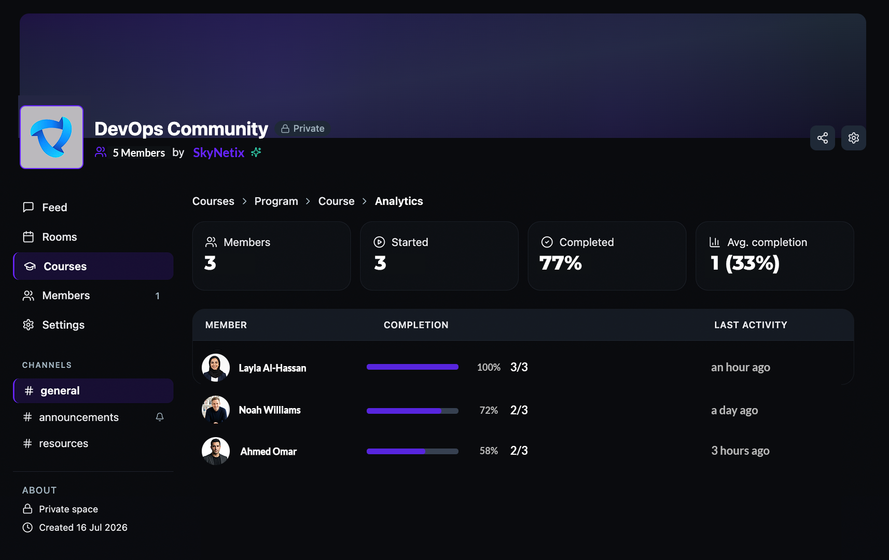

View course analytics
Track enrollment, completion rates, learning hours, and certification status across all your courses — or drill into a specific course to see individual learner progress. Analytics are available from the Courses tab or from inside any course.
Before you get started
- You must be a community admin or Suite Admin.
- Your community must have the Courses tab visible. See Set up your community to enable it.
Access analytics from the Courses tab
- Open your community and click Courses in the left sidebar.
- Click Analytics in the top toolbar.

Read the all-courses analytics dashboard
The all-courses dashboard gives you a high-level view of learner activity across every course in the community.
At the top, four summary cards show:
- Members — total number of enrolled learners.
- Courses — total number of courses in the community.
- Avg completion — the average completion percentage across all learners.
- Certified — the number and percentage of learners who earned a certificate.

Below the summary cards, use Filters to narrow the member table:
- Courses completed — set a minimum and maximum number of completed courses.
- Overall % — filter by overall completion percentage range.
- Certificate — filter by certificate status (Any, Issued, or Not issued).
- Status — filter by member status.
- Certificate date — filter by the date range a certificate was issued.
The member table shows each learner's name, email, number of courses completed, overall progress bar and percentage, total learning hours, and certificate status.
Access analytics for a specific course
- Open a course by clicking the course card.
- Click Analytics in the top toolbar.

Read the course-level analytics dashboard
The course-level dashboard shows learner progress for a single course.
At the top, four summary cards show:
- Members — total number of learners enrolled in this course.
- Started — number of learners who began at least one lesson.
- Completed — percentage of learners who finished all lessons.
- Avg completion — the number and percentage of learners who completed the course.
The member table shows each learner's name, a progress bar with completion percentage and lesson count (e.g., 2/3), and their last activity timestamp.
